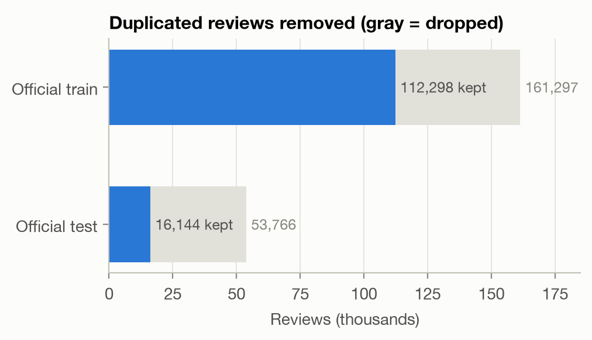
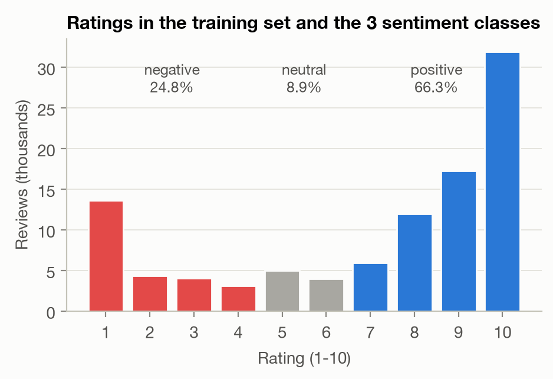
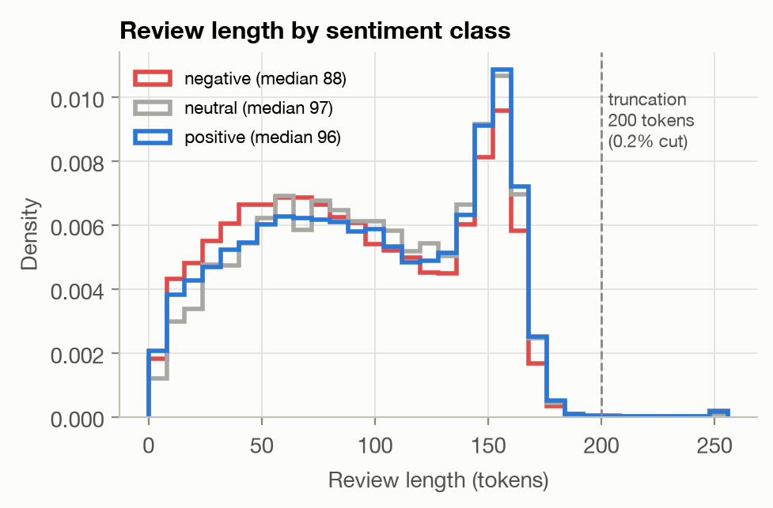
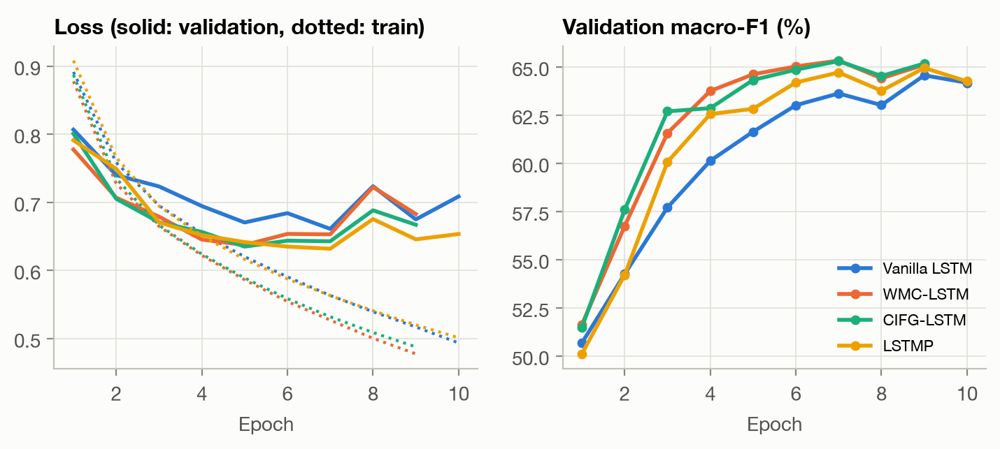
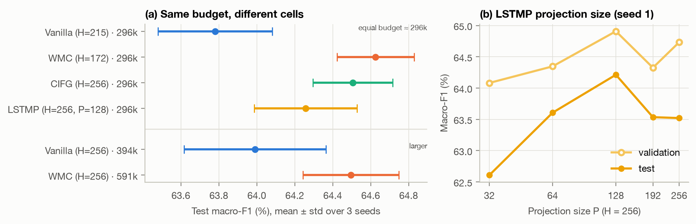
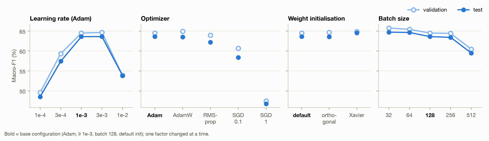
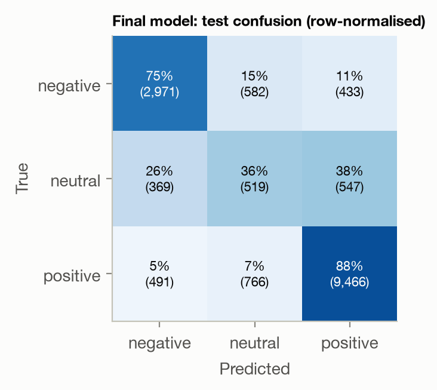

Lab Project on Recurrent Neural Networks — Advanced NLP 2026/2027
October 2026 — Code: https://github.com/Anyslouzal/lstm-drug-reviews
Patients post free-text reviews of the drugs they take, together with
a 1–10 satisfaction rating. We predict the sentiment of
a review from its text alone, in three classes following the dataset
authors [1]: negative (rating 1–4), neutral (5–6) and
positive (7–10). This is useful for pharmacovigilance and to
summarise patient experience at scale. Our objectives are (i) to build a
vanilla LSTM [5] baseline, (ii) to implement and
compare LSTM cells that are not vanilla — we
implemented the three cells of the appendix: Working Memory
Connections (WMC) [2], the Coupled Input-Forget Gate
(CIFG) [3] and the LSTM with projection
(LSTMP) [4] — and (iii) to study how training
hyper-parameters (learning rate, optimizer,
initialisation, batch size) affect them. All cells are written from
scratch with nn.Linear; nn.LSTM is never used
in the models.
Data and leakage. The UCI Drug Review (Drugs.com) dataset has 161,297 training and 53,766 test reviews (3,436 drugs, 884 conditions). Our first finding is a strong duplication problem: 48,968 training reviews (30 %) are exact copies of another one — 99.97 % of the duplicate groups list the same text under several drug names (brand and generic name of the same molecule), with the same rating in 99.9 % of cases. Worse, 32,216 test reviews (60 %) also appear verbatim in the training set. Keeping them would reward memorisation and inflate test scores. We therefore keep a single copy of each review, drop test reviews seen in training, and carve a stratified 10 % validation split out of the training set: 101,068 train / 11,230 validation / 16,144 test reviews (Fig. 1a). The three splits share the same class proportions.



Figure 1 — Exploratory analysis of the training set.
Class imbalance. Ratings are polarised (Fig. 1b): 10/10 alone is 32 % of the reviews. After mapping, the classes are 66.3 % positive, 24.8 % negative and only 8.9 % neutral. A majority-class predictor reaches 66 % accuracy but a macro-F1 of 0.27, so macro-F1 is our main metric and accuracy is reported as a secondary one.
Length and vocabulary. Reviews have 95 tokens on average (median 94, 99th percentile 173) with a peak around 150–160 tokens, the length limit of the website (Fig. 1c). We truncate at 200 tokens, which affects only 0.2 % of the reviews. Negative reviews are slightly shorter (median 88 vs 96–97). Text is HTML-unescaped, lower-cased and tokenised into words and punctuation; the vocabulary has 21,331 entries (words seen at least 3 times in training, plus padding and unknown) (out-of-vocabulary rate: 0.5 % on test). A log-odds analysis [6] of the most class-specific words shows why the neutral class is hard: positive reviews use works, love, life, great, amazing, miracle, negative ones worse, worst, horrible, terrible, stop, removed, reaction, while neutral reviews are characterised by contrast and hedging (however, but, hoping, gained, tired) — they mix positive and negative statements, so the model must weigh the whole review rather than detect keywords. This is a natural test for the memory of an LSTM.
Cells. Each cell computes the input part
of all gates for all time steps with one nn.Linear before
the recurrent loop, then adds the recurrent part at each step (the gate
matrices are stacked in one nn.Linear, which is the same
parameterisation as the appendix equations). The non-vanilla cells
differ as follows:
Verification. Unit tests check that, with the same
weights, our vanilla cell and LSTMP reproduce PyTorch’s
nn.LSTMCell and nn.LSTM(proj_size=P) to
(used only as an oracle), that WMC reduces to the vanilla cell when
,
that CIFG keeps
when
,
and that padding does not change the outputs.
Classifier. Token ids → embedding (dimension 128, trained from scratch) → dropout 0.3 → one recurrent layer → hidden state after the last real token of the review (the state is frozen on padding, equivalent to packed sequences) → dropout → linear layer → softmax over the 3 classes. Using the final state (rather than pooling over time) makes the classifier rely on what the cell remembers, which is what we want to compare.
Training protocol (identical for every model). Same splits, same preprocessing and same evaluation. Cross-entropy with class weights proportional to 1/√(class frequency) (a compromise between the imbalance and accuracy), Adam (lr ), batch size 128 with length bucketing, gradient-norm clipping at 1, at most 10 epochs with early stopping (patience 3) on validation macro-F1; the best checkpoint is evaluated once on the test set. The architecture comparison is repeated with 3 seeds (mean ± std). Training ran on an Apple M4 GPU (PyTorch MPS); experiments are logged as JSON per run and aggregated by a script (CSV tables and figures in the repository).
Table 1 compares the four cells with ( for LSTMP). The embedding (2.73 M parameters) dominates the total size, so we report the recurrent parameters separately: they are what differs between cells.
| Cell | Recurrent params | Total params | Val. macro-F1 | Test macro-F1 | Test acc. | F1 neg / neu / pos | Epochs to 62 % | s / epoch |
|---|---|---|---|---|---|---|---|---|
| Vanilla | 394,240 | 3,125,379 | 64.56 ± 0.36 | 63.99 ± 0.37 | 78.9 ± 1.5 | 75.1 / 28.6 / 88.2 | 5.3 | 113 |
| WMC | 590,848 | 3,321,987 | 65.60 ± 0.50 | 64.50 ± 0.25 | 79.8 ± 0.5 | 75.5 / 29.2 / 88.8 | 3.7 | 161 |
| CIFG | 295,680 | 3,026,819 | 65.59 ± 0.19 | 64.51 ± 0.21 | 78.7 ± 0.7 | 74.9 / 30.5 / 88.1 | 3.3 | 102 |
| LSTMP | 296,064 | 3,026,819 | 64.95 ± 0.11 | 64.26 ± 0.27 | 79.1 ± 1.5 | 75.1 / 29.2 / 88.5 | 4.0 | 128 |
Table 1 — Mean ± std over 3 seeds (%). “Epochs to 62 %”: first epoch with validation macro-F1 ≥ 62 %. Times measured with 3 runs sharing the GPU (relative values only).

All cells reach a similar level — test macro-F1 between 64.0 and 64.5 % and accuracy 79–80 % — so the choice of cell is not decisive on this task. The ranking is nevertheless consistent: WMC and CIFG beat the vanilla baseline by +1.0 point on validation (Welch t-test, and ) and +0.5 on test ( with only 3 seeds: a consistent trend, not a proof). LSTMP lies in between (+0.3 test). The clearest effect is on optimisation speed (Fig. 2): CIFG reaches 62 % validation macro-F1 after 3.3 epochs and WMC after 3.7, against 5.3 for the vanilla cell. In CIFG the forget and input gates cannot both open, so each update of the memory is a convex combination that keeps bounded and well conditioned; in WMC the gates see the memory content directly and can react to it, which may also ease credit assignment. CIFG gives the best trade-off: the (tied) best test score and the best neutral-class F1, with 25 % fewer recurrent parameters than the vanilla cell, half those of WMC, and the fastest epochs. Training loss keeps decreasing while validation loss rises after epoch 5–7 for every cell (Fig. 2, left): the models start to over-fit, which early stopping handles.
The neutral class remains the bottleneck (F1 ≈ 29–30 % against 75 % negative and 88 % positive): neutral reviews mix praise and complaints (§2) and are 9 % of the data. The confusion matrix of the final model (§4.4) shows that neutral reviews are confused in both directions.
Since the cells differ in size, we also trained the vanilla cell with and WMC with , so that all four cells have ≈296k recurrent parameters — the size of CIFG-256 and LSTMP-256/128 (3 seeds each, Fig. 3a).

At equal budget the gap widens: vanilla 63.78 ± 0.30, LSTMP 64.26 ± 0.27, CIFG 64.51 ± 0.21 and WMC 64.63 ± 0.20 test macro-F1. CIFG (+0.73, ) and WMC (+0.85, ) are now significantly better than the vanilla cell. Shrinking WMC from 591k to 296k parameters does not hurt it (64.50 → 64.63), and enlarging the vanilla cell from 296k to 394k barely helps (63.78 → 63.99): the improvement comes from the structure of the cell, not from its capacity. For LSTMP (Fig. 3b, one seed), test macro-F1 peaks at (64.2 %): a strong compression (, 173k parameters) costs 1.6 points, while or (no compression, 460k parameters) bring nothing (63.5 %). A moderate projection acts as a useful bottleneck on the recurrent state.
We varied one factor at a time around the base configuration of the vanilla model (Adam, lr , batch 128, PyTorch default initialisation), seed 1 (Fig. 4).

Is the cell ranking an artefact of the learning rate? We re-trained WMC and CIFG with lr and (seed 1). At both are 1.3 points above the vanilla cell (58.7–58.8 vs 57.4 % test), in line with their faster optimisation; at all three end at the same level (63.4–63.8 %). Taking for each cell the learning rate that is best on validation ( for vanilla, for WMC and CIFG), the gated cells keep their advantage (64.5–64.8 vs 63.6 % test): their benefit is largest when optimisation, rather than capacity, is the bottleneck.
We combined the conclusions of the study: the CIFG cell (best trade-off), Xavier initialisation (best on validation), Adam with lr (between the two best values), batch 128 (batch 64 was slightly better but twice as slow), and we read the review in both directions (the backward pass is run on each review reversed within its own length; the two final states are concatenated). Two candidates were trained for at most 12 epochs and chosen on validation only; the selected model was then evaluated once on the test set.
| Candidate (CIFG, per direction) | Recurrent params | Val. macro-F1 | Test macro-F1 | Test acc. |
|---|---|---|---|---|
| Vanilla baseline (§4.1, mean of 3 seeds) | 394k | 64.56 | 63.99 | 78.9 |
| Bidirectional, 1 layer | 591k | 65.64 | 65.09 | 79.7 |
| Bidirectional, 2 layers (selected) | 1.77M | 66.65 | 65.63 | 80.3 |
Table 2 — Final candidates. The 2-layer model reaches its best validation score at epoch 4 (70 min of training).

The final model reaches 65.6 % test macro-F1 and 80.3 % accuracy, +1.6 points of macro-F1 over the vanilla baseline (per-class F1: negative 76.0, neutral 31.4, positive 89.4). Reading in both directions helps a last-state classifier, because the backward state summarises the beginning of the review, which the forward state may have partly forgotten after ~100 tokens; stacking a second layer adds another point on validation. Fig. 5 shows the remaining errors: 88 % of positive and 75 % of negative reviews are recognised, but only 36 % of neutral ones (26 % predicted negative, 38 % positive), and the class weights pull some clearly polar reviews towards neutral (precision of the neutral class: 28 %). A 6/10 review such as “really helps with mood swings […] it also made me gain 50 lbs” is genuinely ambiguous, and the boundary between 6 and 7 is subjective.
Take-aways. (i) Cleaning the data mattered more than any architectural choice: 60 % of the official test set was leaked. (ii) On this task all LSTM cells perform within one point; the non-vanilla cells are consistently better, significantly so at equal parameter budget, and they learn faster. CIFG is our recommended cell: as accurate as WMC with half its parameters, the cheapest per step and the most stable across seeds. (iii) The learning rate and the optimizer dominate the other hyper-parameters; initialisation and batch size move results by about one point. (iv) The neutral class is the main source of error.
Limitations. Three seeds give confidence intervals of about ±0.4 point, of the same order as the differences we measure; the hyper-parameter study changes one factor at a time on the vanilla cell with one seed, so interactions (e.g. learning rate × cell) are not explored; timings were measured with several runs sharing one GPU.
Potential improvements.
[1] F. Gräßer, S. Kallumadi, H. Malberg, S. Zaunseder. Aspect-based sentiment analysis of drug reviews applying cross-domain and cross-data learning. Proc. Int. Conf. on Digital Health, 2018.
[2] F. Landi, L. Baraldi, M. Cornia, R. Cucchiara. Working Memory Connections for LSTM. Neural Networks 144, 2021.
[3] K. Greff, R. K. Srivastava, J. Koutník, B. R. Steunebrink, J. Schmidhuber. LSTM: A Search Space Odyssey. IEEE Trans. Neural Networks and Learning Systems 28(10), 2017.
[4] H. Sak, A. Senior, F. Beaufays. Long Short-Term Memory Recurrent Neural Network Architectures for Large Scale Acoustic Modeling. Interspeech, 2014.
[5] S. Hochreiter, J. Schmidhuber. Long Short-Term Memory. Neural Computation 9(8), 1997.
[6] B. L. Monroe, M. P. Colaresi, K. M. Quinn. Fightin’ Words: Lexical Feature Selection and Evaluation for Identifying the Content of Political Conflict. Political Analysis 16(4), 2008.